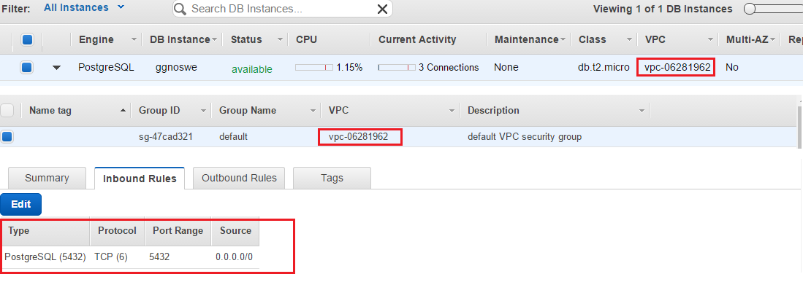

The Video Game industry is one of largest and fastest growing entertainment industries today. In recent history, video games have managed to reach comparable revenue numbers to movies, music and other forms of entertainment. In 2014, the
video game industry earned approximately six times the amount of revenue that the music industry did, while growing to earn almost a third of the revenue of the film industry, and these numbers are still increasing! The allure of this
growing market has spawned a multitude of game studios in the last 40 years, from massive multimedia powerhouses like EA or Activision to the smallest indie hopefuls. And all of them are constantly producing new content, with the industry
cranking out over a thousand new games per year.
All of this information can easily get very chaotic, and it becomes increasingly hard to search for titles you may like on a platform you own. Our goal at ggnoswe.me is to design a website which clearly allows you to view information and
reviews about games as well as their developers and platforms. With this tool, a user will be able to browse our website and get a good understanding of what the best games for a particular platform are, what games a studio has developed,
and what games they may like based on ratings and reviews.
There are several scenarios where this could prove useful. If a user was trying to get into “The Legend of Zelda” for the first time they could simply search for that name and easily figure out which game(s) from the series they wanted
to start with based on ratings and reviews, and what platforms they have access to.
Another example user might like “Final Fantasy” as a series, but want to find something else by the same studio with a similar feel on a different platform since that series is mainly restricted to Playstation. As before they could simply
navigate to a game in the series and go to the studio.
From here they can see a list of published games and look through them to see if any match what they want. For example, if they were looking for 3DS games they may be directed to titles like “Bravely Default” or “Dragonquest” which are
more readily available on Nintendo platforms but developed by the same Studio with the same general aesthetic.
Overall this website aims to be a tool which makes information gathering about video games easier users so they can make more effective decisions on choosing what games to play.
Design
Apiary API:
The API we designed through Apiary works in a similar fashion for each model. For instance, the games model has two different calls that can be made to the API: List All Games and List Specific Game. A user of the API can call list all games, which will return to them a list of JSON objects that contain two keys: id and name that. Users are then able to store these values on their own machines.
Figure 1: Example of a List All Games call
With this information the user is now able to make a call to the List Specific Game API call using the value of id. This call will return a single JSON object that contains the information for a specific game such as id, name, summary, genre, rating, etc.
Figure 2: Example of a List Specific Game JSON call
This process remains the same for each of the other models, which allows the user to find information for the specific topic they want, rather than sending them all the information in the database. In order to make these apiary API calls work we must first create a path for the users of our API to access. So we use the flask_api module that allows use to specify a path for each of the different API requests by calling api.add_resource(). This command does not only require a path to take it must also have a class mapped to it that will return the data needed. So for games we can say api.add_resource(Api_Games,'/api/games') in order to map that class to the games method and when the webpage is load it will automatically call the get method. This particular mapping allows for the user to request a list of dictionaries which contain “id”:”some_id”, “name”:”some_name” which we received by querying our database for all of the games information we had previously scrapped and add only the id and name into the list allowing us to filter out invalid information that we had gotten through our scrapping of the igdb api call. Then we can create another api resource, api.add_resource(Api_Game,'/api/games/'), which can be used to call for specific games. This route now requires the user to provide an integer that we can use as a parameter to our get method. We then have to make a query to the games table with get(id) which returns to us the information for that game and then we return all of that in a dictionary that we finally call jsonify to properly format it into a json that others can use. This example works the same for all of the other models. We changed reviews to include that game for the list all reviews api request because most reviews do not specify what game they are talking about. This will allow for users to filter out reviews for their specific game rather than having to blindly make API request until they find the games they are looking for.
IGDB API Calls:
The API we are accessing through igdb.com returned a list of JSON objects that contains many of the attributes of a game such as name, created_at, and url. However, it also comes with information such as hypes and time_to_beat which are not necessary for our project and were filtered out before we put it into our database. Currently, we are scraping the API by first creating a header dictionary that contains our API key, which will later be used in the URL of the API request. Then we continuously loop in order to pull all of the info from the API and break when we receive multiple error codes, which indicates that we should exit the loop.
Figure 3: Conditions for leaving the loop
Inside of the loop, in order to speed up the process of scraping, we concatenate our current index into the dataset with all entries up to index+1000 separated by a comma.
Figure 4: Speeding up API requests by altering the URL
This implementation allows for a single call to return multiple JSON objects. From there, we parse the JSON objects so that they may be added to the output list.
DB Models
A major part of ORM (object relational mapping) is models. After designing our UML diagram, it was rather simple to translate what we've already designed into code. In our application, we defined four models: game, platform, studio and reviews. In models.py, we created a model for each of our four classes and defined the attributes we wanted them to have. For our database model design, we modeled the attribute types based on the JSON files returned from data scraping and we based our relationships on the design we opted for in the very beginning. Before writing code for models.py, we first scraped the data and saved it as a JSON file. From the JSON file, we inspected the various return fields and for things we saw a numerical value for, we chose the model's attribute to be one of float or integer. Otherwise, if it's a sentence or a string, we chose the attributes to either be of String type or Text type. The only other type we used was DateTime, as we collected data
involving dates.
For those attributes that are linked by a relationship, either one to one or one to many, we used SQLAlchemy's feature db.relationship() to establish that.
game = db.relationship('Game', backref='studio', lazy="dynamic")
The above is an example usage of db.relationship. Calling this will allow SQLAlchemy to populate a foreign key between the two models automatically. Additionally, by providing the fields backref and lazy, more functionality is added to what gets returned.
Backref allows the two models to be able to call upon each other. Normally without backref, only the model that sets the relationship will have knowledge of the other model it's connected to but not the other way around. Having this
option, we can easily create links between the models on our website to navigate back and forth. In addition, lazy="dynamic", allows the query to be loaded lazily, or whenever it is called. For us, we were able to use the query as
a way to generate our data dynamically through a loop using Jinja2. Each time an object is called upon, it is generated on the spot and displayed.
After setting up the database and models.py in this way, we create the relationships needed to represent each object, which allows us to accurately represent the connections between one model and another. Setting up the models.py allowed
us to create objects for each model and be able to use data in a declarative way as we did in __init__.py. Having defined the relationships, it made it easier for us to get the attributes a certain object was connected it. We overwrote __init__
for each model and then we declared them as we made our objects. We used assertions throughout the init methods to make sure that the data being passed in are what we were expecting.
Search Capability
With search, we decided to employ a Flask library to accomplish what we needed. The other alternative was to code up all the different attributes and check if each field of the model contains a given word provided. However, we stumbled upon a library called whoosh_sqlalchemy that a well very formed search based on provided words. The only changes we had to do for Models.py was to add a __searchable__ attribute to each model __searchable__=['title','video','introduction','content','conclusion','positive','negative','url'] . Whoosh_sqlalchemy forms all the query parameters and you can simply perform the query in the manner shown below :
gameResults = Game.query.whoosh_search(items).all()
With the initial query, because we wanted to get rid of nonsensical items we filtered all the queries by certain rules to ensure the data being returned is what the user is expecting. In addition, case sensitvity was also an issue so we had to use ilike to filter.
After performing the query, we gather the data and serve it to our search results html file and then we render it like with all the others using Jinja2. In addition, we used jQuery to do all the hi-lighting and contextualization. With jQuery, when the document loads, a function looks through all of the fields within a div and checks to see if it contains the word[s] that we searched for. If it does, it replaces the word[s] by surrounding it with a span that gives a new style that resembles hi-lighting. For the contextualization, we used Jinja2 within the HTML to help us locate the searched word[s] split by a space. Then for each split word, it goes through each given attribute of a given model and attempts to find an index of that word. Then we take the index and words before and after it and then cut off the rest of the paragraph so we can focus in on the words that the user searched and display it on the search result table. We implemented both And and Or searching that allows us to either find all the things that match exactly to the words provided or it things that match to one or more words in the given search string.
Search Pagination
To be written
Sorting and Filtering
Instead of doing sorting through the front-end, we realized that it could be done easily through the back end with the help of Flask and Jinja2. On the front-end side, we designed the website to include forms so when you click/submit certain values, the forms will pass back the value to the backend. Once we obtain those values from the form that the user submits, we employ them to fetch data from the database using queries that sorted them by the value passed in, in addition to ordering them by ascension or descension. For a lot of our sortings, we simply had the option of sorting by asc and sorting by desc. We targeted a list of values we want users to sort by and then added those options in the front end. Most of the work, however, is being done in our query to the database, as shown in the following snippet:
games = db.session.query(Game.id, Game.name, Game.esrb, Game.rating, Game.genre, Game.release_date, Game.status, Game.image)
.order_by(('Game.' + sort))
Then as with the other things, we pass in the objects that were fetched and rendered them dynamically through use of Jinja2.
We implemented filtering in very much the same way utilizing Flask and Jinja2 as before. Much like before we had a front end design with several checkboxes which indicated which values the user wanted for specific attributes. These checkboxes were either manually cached, generated from the data on the page, or generated using separate queries. For example, a user could select two or three genres of games. It is of note that having no attributes selected is treated the same as having every attribute selected. After selecting all of the filtering options they wanted, the values will be passed as parameters in the URL when the user clicks submit. From here we can do everything through flask. All we have to do is get the desired attributes as lists and then use a simple check with the filter function to filter our results. We can extend the code above to include filtering as shown below:
games = db.session.query(Game.id, Game.name, Game.esrb, Game.rating, Game.genre, Game.release_date, Game.status, Game.image)
.filter(Game.platform_id.in_(filterPlatform))
.filter(Game.genre.in_(filterGenre))
.filter(Game.status.in_(filterStatus))
.filter(Game.category.in_(filterCategory))
.filter(Game.esrb.in_(filterEsrb))
.order_by(('Game.' + sort))
This gives us the data with the appropriate filters in the appropriate sorted order. We can also use .limit() and .offset() to control how many results we get at a time and which ones we decide to show. In our case, the limit would be 9 and the offset would be controlled by which page you are on. When you see the new page with your filtering options enabled, we pass what filtering options you had selected to the new page to ensure that you can adjust your filter as you go.
For pagination and populating the pages with our data, we accessed the database for the respective model and rendered the template passing in the list of objects. To easily accomplish this, we employed a flask library called flask-paginate
that handled most of the work for pagination. Then we altered our HTML files to employ Jinja2 as a way to dynamically generate the data and provide pages, limited by the number of items we want for each page. While Jinja2 may be considered front-end, since it comes with Flask, the back-end developers used it to render the various pages and their elements.
__init__.py
__init__.py is the main file for our application. __init__.py is our file from which we run the application on the server. In it, we defined the different routes to the HTML/CSS files in templates as shown below:
Figure 5: Routing
Tools
Front-End:
The front-end technologies we use include CSS, Bootstrap, HTML, Javascript and ReactJS. Cascading style sheets are used to cleanly handle formatting, placement, and fonts. Bootstrap is a front end framework used to make pages dynamic, responsive, amnd also make organization easier. Javascript is a front end language used to do logic in the front end such as handle user inputs and trigger events. The tool used to embed the company image and game image is simple css and bootstrap that makes the image responsive so that it can fit into the div correctly and
nicely.
ReactJS is a JavaScript library that gives the ability to create very dynamic, interactive webpages that give a great user experience. React is able to produce fast results by maintaining a virtual Document Object Model (DOM), a structuring of HTML elements as a tree, for each component. As a result, instead of reconstructing the entire DOM or reloading a webpage, applications need only update the html elements that change. This pattern is known as single-page application architecture. This enables you to pass data between pages and create a hierarchical system of state and properties between your pages. React’s approach to single-page application architecture allows developers to produce robust applications with ease.
We use ReactJS to create animation on the about the page. When you hover the mouse over the images of the team members, the image dynamically changes to a DC superhero character they resemble. When the mouse goes out of the field of the image, it returns back to the original image. Using reactJS helped us to do it in a faster way.
Furthermore, we used jQuery to perform context hi-lighting when we did search. We had a loop that ran through all the words in the text string and for each word, we looked through the document that contained those data and then surrounded them with a span tag with a class that does the hi-lighting.
D3.js
We are visualizing some of the data from Youtube Sweg by utilizing their RESTful API. In order to do this, we used the D3.js library. We are using a zoomable pie chart that is interactive and changes shape according to the specific category that is clicked. There are 22 categories, each category has channels and each channel has videos. For example, if we click on one category the pie chart changes to show all the channels the category has and on choosing one of the channels the pie chart again changes to show all the videos that channel has.
Back-End:
For the backend of our application, we focused mainly on using Flask paired with Jinja2 for rendering as well as SQLAlchemy for populating our grids and model instances with data. We scraped data from the API we’re using and populated a local database using SQLAlchemy. Doing so allowed us to easily access the data and create dynamically linked pages with more information and embedded images along with creating pagination.
Embedded Media Services
For our models, we embedded various pictures and logos that are associated with their respective models. For instance, Game models had a picture of the game displayed if it exists, Platform models had a picture of the console if it exists and so on. These were implemented using HTML and the image tag, passing in the link to the image as the src. For videos of reviews and games if they existed, we used the iframe tag passing in the width and the desired lengths. For src, we passed in the link to the video if it existed.
Scraping Data:
In order to scrape the data, we first registered an API key with IGDB on http://igdb.github.io/api/. After going through their documentation, we learned the various options we had and the information each call would output. The four models we focused on were Game, Companies, Reviews and Platforms. We established these four as our primary models. We then created one general script trying to scrape data for each of our models. To accomplish this, we used the Python libraries requests, json and sys. Requests were used to connect to the API and gather the data we save as a JSON file. We use sys to parse the various inputs that the script takes to populate a given model. With this information, we were able to populate our database as described in the following sections.
Database:
We used SQLAlchemy with our Flask application as a means of easily storing data and accessing it when needed. We first configured our application to use PostgreSQL running in AWS in models.py. Then to initialize the database, we entered the Python interactive mode and created a session for the database and called “db.create_all()”. In order to populate our database as quickly and efficiently as possible, we created a script called populateDb.py that we used to parse the JSON files we scraped, as detailed above, and inserted the various object models into the database. For each model, we constructed the appropriate object, initialized the information, and then added the object to our database using db.session.add(). If no errors occurred, we committed the changes.
In Phase 1, rather than hardcode instances and their respective links to other models, we chose to employ SQLite to store the data we scraped. This was fine for Phase 1 since a DB wasn’t required, but in Phase 2, we had to transfer our data from SQLite to an AWS PostgreSQL instance. Initially, we exported the data from SQLite as a CSV and tried to import the CSV into Postgres. This turned out to be more difficult than expected because even with the CSV file, we still had to create tables and specify their attributes in Postgres, which would’ve been tedious and error-prone. Rather than exporting/importing CSV files, we also tried to populate our database from the JSON files we scraped. This approach worked and was less tedious than importing CSVs/creating tables, but we quickly found it to be very slow. For our “Games” table which has 25,000+ instances, populating the database took 2+ hours. Rather than run our script to populate Postgres, which would take hours, we found an easier way: dump the SQLite database as a .sql file and import it into Postgres. This was how we ended up populating the rest of our tables.
To confirm that our data was actually stored in the database and to further manage our tables, we used a fantastic GUI management tool called pgAdmin. Once we had established a connection with our DB instance on AWS, viewing the data was as simple as right clicking on a table and pressing “Show rows” or "Show first 100 rows", which displays a screen similar to this:
Figure 1: Show 100 rows in pgAdmin
In regards to actually setting up the PostgreSQL instance on AWS, everything was fairly straightforward: just fire up the RDS service’s launch wizard, configure a few things, and you’re good to go. One painful problem that we ran into early on was being able to see the instance “running” on AWS, but not being able to connect to it in pgAdmin. After reading every word of the documentation, we found out that it was because, by default, our security settings do not allow incoming connections. To change that, go to the VPC associated with the Postgres instance and change its “Security Group” as follows to allow incoming connections from anywhere:

Figure 2: PostgreSQL Security Group Settings
While on the topic of security, one glaring design question that we faced was: “How do we want to store our username/password combination to connect to the Postgres instance in models.py?” The simplest thing to do would be to store them in plain text, as many other groups are doing. This, however, seemed like a very bad idea to us because anyone would then be able to access your database and drop all the tables. Instead, we set environment variables containing any secret information that we didn’t want displayed in plain text, and referenced those environment variables in our code as follows:
Doing this ensures that our login details will not be viewable on GitHub and that only those who have the environment variable set will be able to connect to our database. Unsurprisingly, Travis CI also has a feature that supports environment variables (by encrypting them), so our code runs without any problems on Travis as well.
Hosting
To set up an AWS server that hosts a Flask application:
I. Create a Virtual Private Cloud (VPC)
Create an AWS account and log in to the console.
From the Services tab, select VPC. A Virtual Private Cloud (VPC) determines who gets to access your website.
Click Start VPC Wizard > VPC with a Single Public Subnet. Keep most of the defaults, but give a value to VPC name. Under Service Endpoints, click Add Endpoint. In the Subnet field, select Public Subnet. Create the VPC.
II. Create an EC2 instance
Once the VPC has been created, from the Services tab, select EC2. Under the Create Instance heading, click Launch Instance. Select the Free Tier Eligible Ubuntu Server.
Figure 1: Free Tier Eligible Ubuntu Server
For the Instance Type, select the General Purpose, Free Tier Eligible instance type. Click Next.
On Step 3: Configure Instance Details, change Auto-assign Public IP to Enable.
In the EC2 configuration settings, skip to Step 7: Review Instance Launch. Under the Security Groups heading, click Edit security groups > Add Rule > Type: HTTP > Source: Anywhere. Then click Review and Launch.
Figure 2: Review Instance Launch Settings
When you launch your instance, you will need to create a new key/pair. Give it a name, and download the key/pair file. Make sure you know where you downloaded the file; you will need it to SSH into your Linux box.
To connect to your instance, select it from the EC2 Management page and click Connect. The following message will pop up. Follow the instructions and you’ll be able to connect to your instance.
Figure 3: Instructions to access your EC2 instance
Once you’ve connected to your Linux box, your terminal should look like this:
Figure 4: Connecting to an EC2 instance
III. Installing Apache on the EC2 Instance
In order to correctly host a Flask application on your EC2 instance, you need web server software, which is where Apache comes in. To install Apache run the following commands in your terminal:
sudo apt-get install apache2
sudo apt-get update
sudo apt-get install libapache2-mod-wsgi
To verify that Apache has been installed correctly, enter the IP Address of your EC2 instance in a web browser. To find the IP Address, click on your instance in the EC2 Management Console and copy the value given as the IPv4 Public IP. You should see a page like this in your web browser:
Figure 5: Sample Ubuntu Default Page
IV. Installing and Deploying the Flask Application
Once you’ve verified that Apache has been correctly installed, install Flask with the following commands:
sudo apt-get install python-flask
sudo apt-get upgrade
In the /var/www directory, create the following project structure:
NOTE: From here on, replace any instances of GGnoSWE with the desired name of your application.
GGnoSWEApp is where your Flask application code should live. Copy any Flask application code from your local machine to this directory.
Install any libraries/modules that your application needs on the server. For example,
sudo apt-get install python-pip
sudo pip install Flask-SQLAlchemy
...
V. Configuring Apache to point to your Flask Application
Create a file in /etc/apache2/sites-available/ named GGnoSWEApp.conf with the following contents, replacing XXXXXXXX with the IP Address of your EC2 instance and the ServerAdmin’s e-mail with your email:
<VirtualHost *:80>
ServerName XXXXXXXX
ServerAdmin admin@mywebsite.com
WSGIScriptAlias / /var/www/FlaskApps/FlaskApps.wsgi
<Directory /var/www/FlaskApps/GGnoSWEApp/>
Order allow,deny
Allow from all
</Directory>
<Directory /var/www/FlaskApps/GGnoSWEApp/static/>
Order allow,deny
Allow from all
</Directory>
ErrorLog ${APACHE_LOG_DIR}/error.log
LogLevel warn
CustomLog ${APACHE_LOG_DIR}/access.log combined
</VirtualHost>
Run the following commands to configure/restart Apache:
sudo a2enmod wsgi
sudo apachectl restart
sudo a2ensite GGnoSWEApp
service apache2 reload
sudo /etc/init.d/apache2 reload
To tell Apache how to run Flask, create a file named FlaskApps.wsgi in the /var/www/FlaskApps/ directory and enter the following code, replacing home with the name of the Python file that runs your Flask application:
#! /usr/bin/python
import sys
import logging
logging.basicConfig(stream=sys.stderr)
sys.path.insert(0,"/var/www/FlaskApps/GGnoSWEApp/")
# home points to the home.py file
from home import app as application
application.secret_key = "somesecretsessionkey"
Restart the Apache server with the following 2 commands:
sudo service apache2 restart
sudo /etc/init.d/apache2 reload
Type the IP Address of your EC2 instance in your web browser again and you should be able to see your Flask application on the Internet! As an example:
Figure 6: Example of a deployed Flask application
Every time you make changes to the Flask application on your server, remember to restart Apache afterwards. Simply run the following command after each change:
sudo service apache2 restart
You have now deployed your Flask application on an EC2 instance with the help of an Apache web server.
Enhanced WSGI
With the use of Whoosh sqlalchemy, we ran into problems in using the package as it wanted to create files and the server blocks it due to lack of permission. A way we found to solve this issue was to wrap our application within a virtual environment that runs on Python 3. We figured it would be better to change our server to run on Python 3 instead of Python 2 because we test everything and write everything in Python 3 locally. To do so, we installed a virtual environment and then downloaded all the required packages for our application. Then within our WSGI.py and WSGI configuration file, we set it to execute the activiation of the virtual environment before serving our application.


 NOTE: From here on, replace any instances of GGnoSWE with the desired name of your application.
NOTE: From here on, replace any instances of GGnoSWE with the desired name of your application.